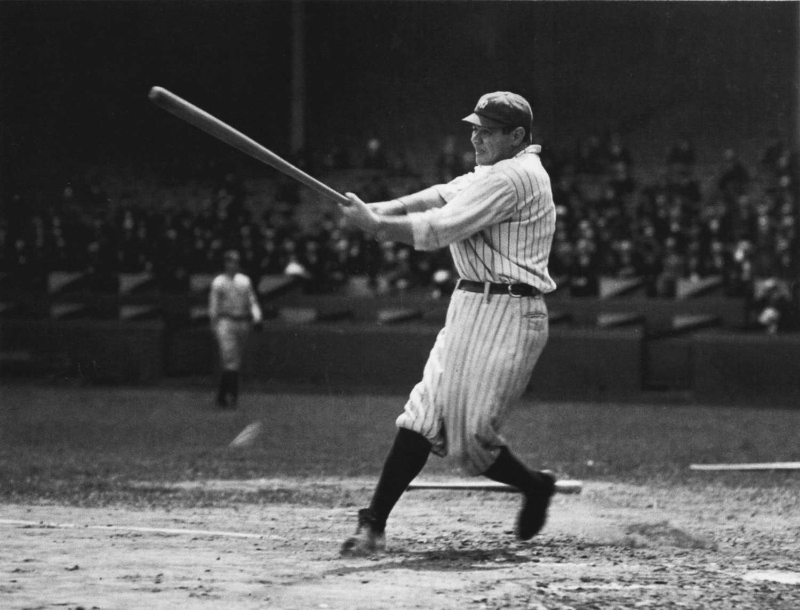

O beisebol é um esporte praticado em um campo com bases, onde os jogadores tentam marcar runs ao redor das bases. O jogo é conhecido por sua estratégia, habilidade e por grandes competições como a MLB.
Melhor jogador do mundo
Babe Ruth é considerado um dos melhores jogadores de beisebol de todos os tempos. Ele é conhecido por sua habilidade, poder de rebatida e por estabelecer vários recordes durante sua carreira. Com uma carreira repleta de conquistas, incluindo sete títulos da World Series, Babe Ruth é uma figura icônica no mundo do beisebol e continua a inspirar fãs e jogadores ao redor do mundo.
